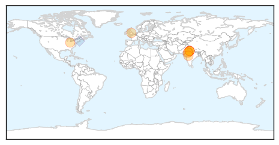

Ebola
30-Day Web Trend
0 alerts, 0 warnings

30-Day Twitter Trend
0 alerts, 0 warnings

Article Locations

Article Confidences

Top Articles:
- 1.000
- WHO hails first full week with no new Ebola cases since March 2014
- 1.000
- The Ebola epidemic might (might) be finally over
- 1.000
- Lecture reflects on legacy of the Ebola crisis
- 1.000
- Dallas Hospital Worker Diagnosed With Ebola, First to Catch Deadly Virus in U.S.
- 0.999
- Travelers Returning from West Africa Tested Negative for Ebola
- 0.999
- WHO hails first full week with no new Ebola cases since March 2014
- 0.992
- Dedicating Emergency Operations Centers in West Africa « Awoko Newspaper
- 0.987
- Family Who Came In Contact With Thomas Eric Duncan Is Being Relocated
- 0.980
- Malaria Deaths Declined, Ebola Threatening its Revival in West Africa
- 0.978
- Lessons Learned From Ebola Epidemic Discussed At San Diego Conference
- 0.975
- VSO Disseminates Research Findings Report of Impact on Ebola
- 0.961
- With the Ebola epidemic nearly over, Paul Farmer has ideas about how to prevent the next one
- 0.949
- Research Shows More Women Died During Ebola
- 0.947
- Haemorrhagic fever kills four in Central Darfur - Sudan
- 0.944
- Tekmira, Biocryst, Sarepta, NewLink, Inovio, NanoViricides Up In Premarket
- 0.941
- Liberia needs 40,000 Doctors
- 0.933
- Politico SL News Medical students call for training opportunities
- 0.910
- China to build 100 hospitals and clinics in Africa
- 0.907
- Chinese, African Health Ministers Affirm Commitment to Cape Town Declaration for Future Cooperation
- 0.905
- China-Africa health forum adopts Cape Town Declaration
- 0.898
- China-Africa health forum adopts Cape Town Declaration
- 0.887
- Ambassadors briefed on Africa’s health policy direction
- 0.854
- Chinese boost to Africa’s health services - Politics
- 0.816
- S/Leone: Ebola devastated maternal health
- 0.790
- Politico SL News China to deploy fourth Ebola vaccine trial in Sierra Leone
- 0.730
- China, Africa agree on building resilient public health system
- 0.719
- Ebola – Weep Not Mother
- 0.719
- ITU's big plans for Sierra Leone
- 0.715
- China, Africa agree on building resilient public health system
- 0.704
- CDC awards Emory $2.2 million grant to prevent spread of infectious diseases
- 0.654
- Ugandan on the “Africa is not Ebola” campaign
- 0.603
- Let's remain alert and refuse to become complacent
- 0.587
- Motsoaledi signs health deal with China
- 0.536
- MOHS Targets 1.5 Million Children
Top Tweets:
- 0.989
- Current assays detect Ebola virus in semen - Healio http://t.co/4zKVBKCw9Y ebola EVD
- 0.981
- FINALLY!!!!! No confirmed cases of Ebola virus disease (EVD) were reported in the week to 4 October!!!!! ZEROEBOLACASES
- 0.957
- Ebola diaries: Bringing help to those in desperate need - World Health Organization http://t.co/PBK6TnmQJy ebola EVD
- 0.929
- Ugandan on the “Africa is not Ebola” campaign - New Vision http://t.co/8IQeTV3f9m ebola EVD
- 0.904
- Baby and maternal deaths soar in Sierra Leone amid Ebola fears – researchers - The Guardian http://t.co/Xwyv5x4SiL ebola EVD
- 0.859
- Margaret put others first in Ebola fight - Edinburgh Evening News http://t.co/0jNDDoBh0O ebola EVD
- 0.855
- World Marks First Week of No New Ebola Cases - TIME http://t.co/6qoDzpFPWO ebola EVD
- 0.816
- Paul Allen gives another $11M to Ebola, epidemic preparedness - Puget Sound Business Journal (Seat... http://t.co/mLAdbJyAXh ebola EVD
- 0.788
- Lessons Learned From Ebola Epidemic Discussed At San Diego Conference - KPBS http://t.co/dwY7T0FXgX ebola EVD
- 0.785
- Statement on the 7th meeting of the IHR Emergency Committee regarding the Ebola outbreak in West Africa http://t.co/4C2se4JnNp
- 0.764
- No confirmed Ebola cases were reported in the week to 4 October. First time that a complete epi week has 0 confirmed cases since March 2014
- 0.749
- Momentous: For the 1st time since West Africa's Ebola outbreak started a week has passed without a case. greatnews http://t.co/hGVp0nalJT
- 0.710
- How a local peacebuilding network helped stop the spread of Ebola in Liberia http://t.co/1Z6geRr3II
- 0.701
- .@nytimes team produced important journalism during West Africa's Ebola outbreak. Hope to read an book. http://t.co/x0rgA1phSQ
- 0.690
- Federal Employees to Be Honored for Achievements in Fighting Cancer, Ebola and ... - G http://t.co/o6RLLc2m7d ebola EVD
- 0.683
- 'Living with my nightmares', fiancee of Ebola victim speaks - KTAL http://t.co/sBofyBZnGT ebola EVD
- 0.667
- Fiancée of Ebola Victim Reflects One Year Later - NBC 5 Dallas-Fort Worth http://t.co/lHHzvd1F2X ebola EVD
- 0.667
- Fiancée of Ebola Victim Reflects One Year Later - NBC 5 Dallas-Fort Worth http://t.co/3XKEr7kpoT ebola EVD
- 0.642
- RT: SierraLeone reported no confirmed Ebola cases for three consecutive weeks. The last positive case was discharged on 2…
- 0.619
- SierraLeone. Exploring the impact of the Ebola outbreak on routine maternalhealth services @VSO_Intl http://t.co/duATkONlGe
- 0.596
- Ebola Viral Infections – Pipeline Review, H1 2015 by ReportBazzar. - http://t.co/758tMXPgAh (blog) http://t.co/mn3b8DQjeH ebola EVD
- 0.560
- Week ending 10/4 marks first complete epi week w. zero confirmed Ebola cases in W. Africa since March 2014. http://t.co/hSIc9fowBZ
- 0.552
- RT: Ebola Wonderful news! Praying and holding thumbs for everyone in Guinea, Sierra Leone and Liberia https://t.co/pY3klypYjV
- 0.540
- What happened to Liberia's Ebola orphans? - http://t.co/iHBGIUu0Mk http://t.co/1zBlBf7N3I ebola EVD
- 0.526
- RT: Week ending 10/4 marks first complete epi week w. zero confirmed Ebola cases in W. Africa since March 2014. http://t.co/…
- 0.526
- RT: Week ending 10/4 marks first complete epi week w. zero confirmed Ebola cases in W. Africa since March 2014. http://t.co/…
Swine Flu
30-Day Web Trend
2 alerts, 0 warnings

30-Day Twitter Trend
2 alerts, 0 warnings

Article Locations
Article Confidences

Top Articles:
- 0.999
- After dengue, swine flu likely to hit Delhi, govt preps up
- 0.993
- This week in wellness: Preventing the flu
- 0.989
- A nip in the air, so guard against swine flu
- 0.986
- 10 swine flu cases reported in Rajasthan
- 0.984
- Swine flu case found positive in City, Health Department on alert
- 0.982
- 10 swine flu cases reported in Rajasthan
- 0.963
- Have asked govt. hospitals to be prepared to fight swine flu, says Satyendra Jain
- 0.942
- Delhi Health Minister holds meeting to review Swine Flu preparedness
- 0.893
- Scientists call for urgent trials to judge flu drugs for pandemics
Top Tweets:
- 0.628
- Hey, @DavidNather the study shows pretty good flu shot protection against H1N1 & flu B. Not perfect is better than nothing!